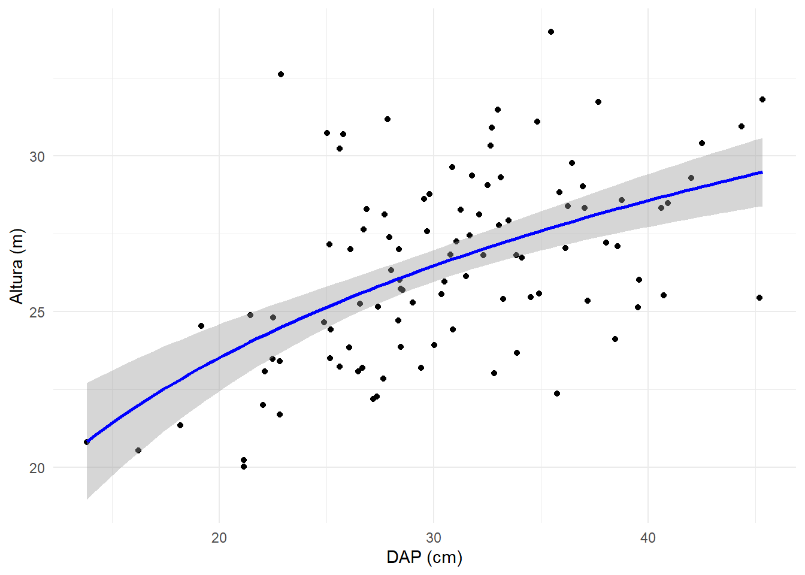
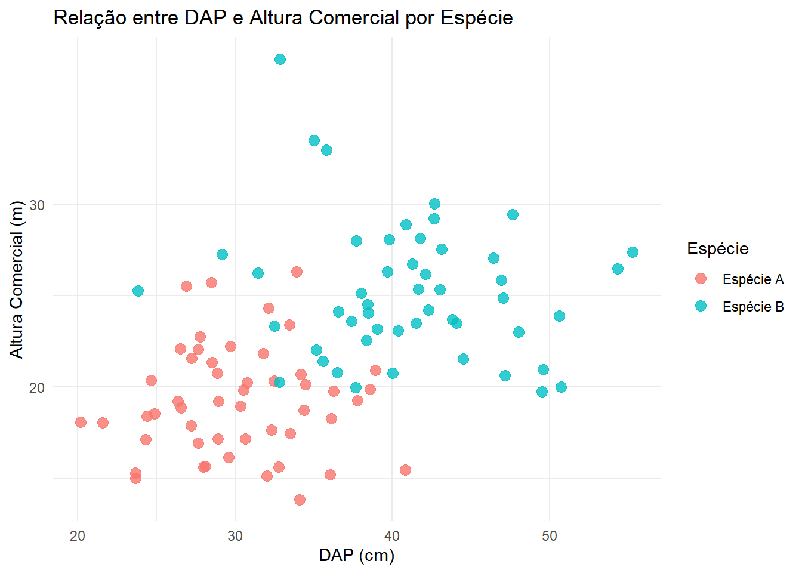
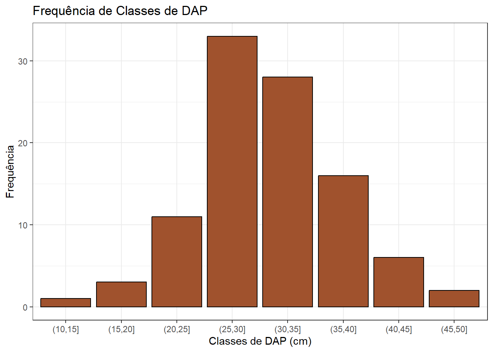
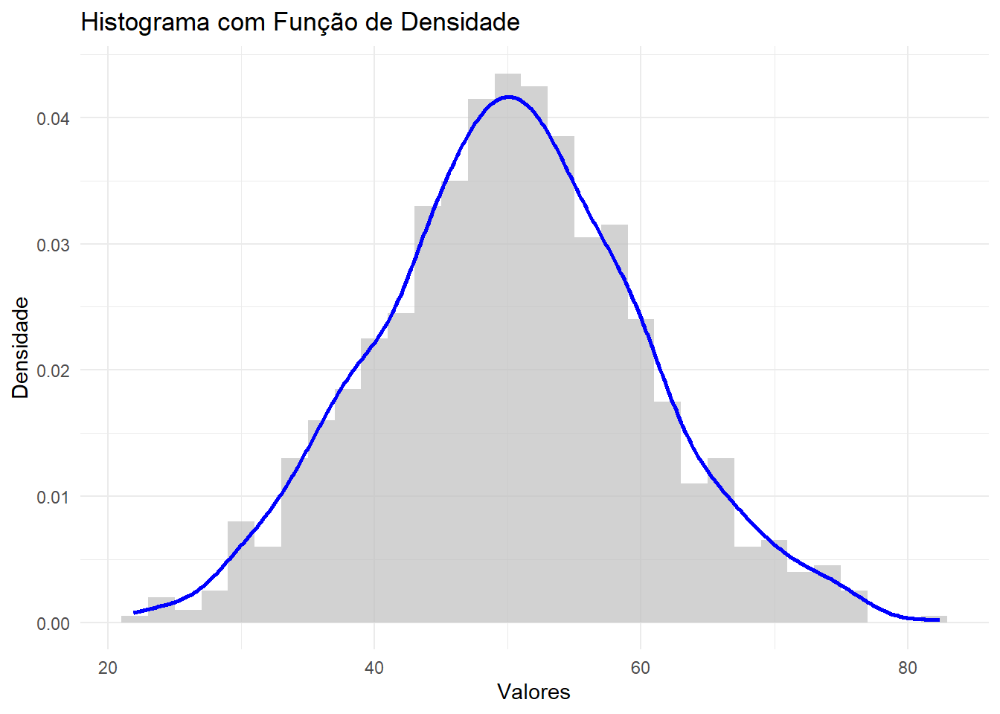

2.5 Pacote ggplot2
O ggplot2 é um pacote poderoso para criar gráficos no R, baseado na “gramática de gráficos”. Ele permite construir visualizações claras e customizáveis, úteis em estudos florestais, como análise de biomassa, inventários florestais e distribuição de espécies.
2.5.1 Gráfico de dispersão
Ideal para visualizar relações entre variáveis contínuas, como altura e diâmetro das árvores.
# Dados simulados de árvores com distribuição normal
set.seed(123) # Para resultados reprodutíveis
DAP = rnorm(100, mean = 30, sd = 7) # DAP em cm
Altura = (log(DAP) * 7.87)
random_h_factor = rnorm(100, 1, 0.1)
Altura = Altura * random_h_factor
dados_arvores <- data.frame(DAP, Altura)
library(ggplot2)
ggplot(data = dados_arvores, aes(x = DAP, y = Altura)) +
geom_point(color = "red", size = 2) +
theme_minimal()
Adicionando uma linha de tendência
# Gráfico com ajuste linear e intervalo de confiança
ggplot(data = dados_arvores, aes(x = DAP, y = Altura)) +
geom_point() +
geom_smooth(method = "lm", formula = y ~ log(x), color = "blue", se = TRUE) +
labs(
x = "DAP (cm)",
y = "Altura (m)"
) +
theme_minimal()
Dispersão condicional
# Dados simulados
set.seed(123)
dados <- data.frame(
DAP = c(rnorm(50, mean = 30, sd = 5), rnorm(50, mean = 40, sd = 7)), # Diâmetro em cm
Altura_Comercial = c(rnorm(50, mean = 20, sd = 3), rnorm(50, mean = 25, sd = 4)), # Altura em metros
Especie = rep(c("Espécie A", "Espécie B"), each = 50) # Categorias de espécies
)
ggplot(data = dados, aes(x = DAP, y = Altura_Comercial, color = Especie)) +
geom_point(size = 3, alpha = 0.8) + # Tamanho e transparência dos pontos
labs(
title = "Relação entre DAP e Altura Comercial por Espécie",
x = "DAP (cm)",
y = "Altura Comercial (m)",
color = "Espécie"
) +
theme_minimal() # Tema limpo
2.5.2 Gráfico de Barras
# Criando classes de diâmetro
dados_arvores$Classe_DAP <- cut(dados_arvores$DAP, breaks = seq(10, 60, 5))
ggplot(data = dados_arvores, aes(x = Classe_DAP)) +
geom_bar(fill = "sienna", color = "black") +
labs(
title = "Frequência de Classes de DAP",
x = "Classes de DAP (cm)",
y = "Frequência"
) +
theme_bw()
Adicionando classes
dados_arvores$Especie <- sample(c("Espécie A", "Espécie B"), 50, replace = TRUE)
ggplot(data = dados_arvores, aes(x = Classe_DAP, fill = Especie)) +
geom_bar(position = "dodge", color = "black") +
labs(
title = "Frequência de Classes de DAP por Espécie",
x = "Classes de DAP (cm)",
y = "Frequência",
fill = "Espécie"
) +
theme_light()
2.5.3 Histograma
dados_arvores$Biomassa <- dados_arvores$DAP * dados_arvores$Altura * 0.05
ggplot(data = dados_arvores, aes(x = Biomassa)) +
geom_histogram(binwidth = 2, fill = "green", color = "black") +
labs(
title = "Distribuição da Biomassa das Árvores",
x = "Biomassa (kg)",
y = "Frequência"
) +
theme_classic()
2.5.4 Gráfico de linhas
# Dados simulados
set.seed(123)
anos <- 2000:2020
preco_madeira <- cumsum(runif(length(anos), -2, 5)) + 100 # Preço acumulativo com flutuações
dados_madeira <- data.frame(
Ano = anos,
Preco = preco_madeira
)
# Gráfico de linhas
ggplot(data = dados_madeira, aes(x = Ano, y = Preco)) +
geom_line(color = "darkgreen", size = 1) +
labs(
title = "Preços Médios da Madeira ao Longo do Tempo",
x = "Ano",
y = "Preço Médio (R$/m³)"
) +
theme_minimal()
2.5.5 Boxplot
ggplot(data = dados_arvores, aes(x = Especie, y = DAP, fill = Especie)) +
geom_boxplot() +
labs(
title = "Distribuição do DAP por Espécie",
x = "Espécie",
y = "DAP (cm)"
) +
theme_light()
2.5.6 Gráficos de densidade
# Dados simulados
set.seed(123)
dados <- data.frame(Valores = rnorm(1000, mean = 50, sd = 10))
# Gráfico de densidade
ggplot(data = dados, aes(x = Valores)) +
geom_density(fill = "blue", alpha = 0.5) +
labs(
title = "Função de Densidade de Probabilidade",
x = "Valores",
y = "Densidade"
) +
theme_minimal()
Combinando Histograma e densidade
ggplot(data = dados, aes(x = Valores)) +
geom_histogram(aes(y = after_stat(density)), binwidth = 2, fill = "gray", alpha = 0.7) +
geom_density(color = "blue", size = 1) +
labs(
title = "Histograma com Função de Densidade",
x = "Valores",
y = "Densidade"
) +
theme_minimal()